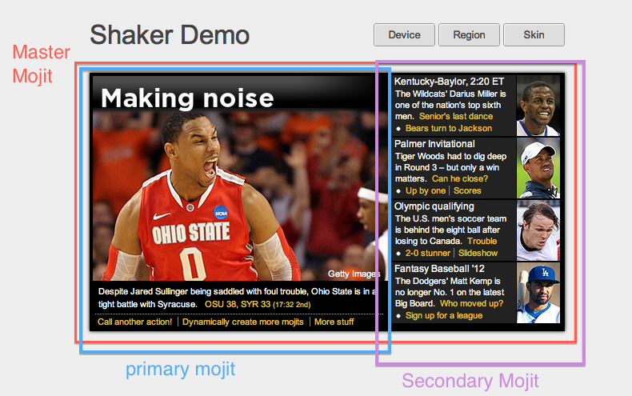

To better understand how Shaker works, we are going to create a simple application that
will cover the basic features and some advanced configuration as well.
Application Overview

Our application will have three main mojits:
- master - the “parent mojit”, which will be the placeholder for the other mojits
- primary - the mojit creating the left part of our application.
- secondary - the mojit creating the right part of our application.
Each mojit will react to a specific set of dimensions:
- device: default, iphone
- region: default, CA
- skin: default, gray, blue
Thus, if we are on a mobile device, we might load different CSS. Similarly, we may
load different assets according to skin and/or region. Shaker will handle all the possible
combinations.
Application Structure
In this section, we will analyze each piece of our application.
master mojit
This mojit will be the placeholder for the other two mojits. Let’s take a look at the
controller and the view:
controller.common.js:
index: function(ac) {
var config = {
children: {
primary: {
type: 'primary',
action: 'index'
},
secondary: {
type: 'secondary',
action: 'index'
}
}
};
ac.composite.execute(config, function (data, meta) {
ac.done(data, meta);
});
},
dynamic:{
ac.done('AJAX entry point!');
}
As you can see, we are not manually including any CSS, and we don’t have any logic in our
controller. Shaker takes care of this at runtime based on the current context.
Note that we have another controller action, which will be used by the binder (explained
in the next paragraph).
index.mu.html:
<div id="doc">
<div id="head" class="clearfix">
...
</div>
<div id="main" class="clearfix">
{{{primary}}}
{{{secondary}}}
</div>
</div>
Also master will react to various dimensions (skin:grey, device:iphone), so
this is how the asset structure looks:
master/
/assets/
master.css
master.iphone.css
myskin.grey.css
myskin.blue.css
Note that there is a special dimension called common, which basically acts as a CSS-base,
sharing its CSS among with other dimensions. The master.iphone.css or
skin.grey.css files will have some style overriding the baseplate style.
primary mojit
This mojit will be the left part of our application (see the image above).
We are not going to show the controller or view because neither contain anything
more than the HTML template and some dummy data to populate it. What
is important to Shaker are the assets contained in the mojit. In this case, the
mojit is sensitive to region and skin:
Assets structure
primary/assets/
primary.css
region.ca.css
primary-skin.grey.css
primary-skin.blue.css
Note
The names of the files don’t matter. Only the folder structure is important.
This mojit will contain a binder, which will be deployed to the client to extend
communication from a different entry point.
Binder: index.js
bind: function (node) {
Y.one('#call').on('click', this._executeInvoke, this);
},
_executeInvoke: function (evt) {
this.mojitProxy.invoke('dynamic', Y.bind(this.resultInvoke, this));
},
resultInvoke: function () {
// Note that no request have been made at this point.
}
We are including this binder so you can see how Shaker is doing the rollups with all the
client-side dependencies (if deploy is set to true).
secondary mojit
This mojit will be the right part of our application. This mojit reacts to all the
previous dimensions:
secondary/assets/
secondary.css
secondary.iphone.css
secondary-region.ca.css
secondary-skin.grey.css
secondary-skin.blue.css
Note
The names of the files don’t matter. Only the folder structure is important.
HTMLFrameMojit
Mojito uses an “HTMLFrame” to create the skeleton of the HTML document and to embed all
your executed mojits (See Using the HTML Frame Mojit).
Shaker will need to be executed within this HTMLFrame, so basically we create a copy of
the original HTMLFrame and add the little pieces we need:
ShakerHTMLFrame controller.server.js
...
__call: function(ac) {
...
// If we are deploying to the client get all the assets required
if (ac.config.get('deploy') === true) {
ac.deploy.constructMojitoClientRuntime(ac.assets,
meta.binders);
}
ac.shaker.run(meta);
// Attach assets found in the "meta" to the page
Y.Object.each(ac.assets.getAssets(), function(types, location) {
...
}
...
}, '0.1.0', {requires: [
'mojito-assets-addon',
'mojito-deploy-addon',
'mojito-config-addon',
'mojito-shaker-addon'
]});
We need Shaker to execute after analyzing all the dependencies if the application is
deployed to the client and before the assets get passed to the template.
Application Configuration
We need to tell Shaker how we want to do the rollups. To do that, we have to
create a shaker object with the correct configuration in application.json.
Example ‘shaker’ object in application.json
[{
"settings": ["master"],
"//": "we set out ShakerHTMLFrame as main mojit"
"//": this configuration is shared to all context
"specs": {
"htmlframe": {
"type": "ShakerHTMLFrameMojit",
"config": {
"deploy": true,
"title": "Shaker Demo",
"child": {
"type": "master"
}
}
}
}
},
{
"settings": ["environment:test"],
"shaker": {
"task": "local"
}
},
{
"settings": ["device:iphone"],
"selector": "iphone"
},
{
"settings": ["region:CA"],
"selector": "ca"
},
{
"settings": ["skin:blue"],
"selector": "blue"
},
{
"settings": ["skin:grey"],
"selector": "grey"
},
{
"settings": ["environment:stage"],
"shaker": {
"task": "s3",
"images": true,
"parallel": 8,
"delay": 0,
"config": {
"client": {
"key": "myAmazonKey",
"secret": "myAmazonSecret",
"bucket": "shaker"
}
}
}
}
]
We define a different configuration for each environment. For example, in the basic
one (["master"]), we don’t have any configuration, so Shaker is going to assume that
we are in “developer mode” which means Shaker won’t do any rollups at all. It’s just going
to include the files one by one. On the other hand, if we are in [stage], Shaker will
do the rollups and upload them to the Amazon CDN (see
Deployment Configuration for more
information). In the next section, we will see exactly what gets deployed in
each particular case.
Shaker Running on Our Application
Now that we understand the internals of our application, let’s see how it behaves at
build time and at runtime.
Build Time
To run shaker, execute the shaker command: mojito shake
- Shaker accepts the following commands:
- --context - Specify the context environment that Shaker use.
- --run - After Shaker executes, it will run the server (exactly as mojito start).
If you don’t specify a context, Shaker will run picking the default
configuration ([master]).
Let’s assume that we run mojito shake --context "environment:test" --run. This will
make Shaker generate local rollups and then start the server. Shaker will take the
following steps:
- It will analyze all your application files, looking for mojits, and within mojits,
the autoloads, assets, binders, views, etc.
- It will compute all the dependencies for binders, all the dimensions for assets, and
generate metadata information.
- It will take the previous metadata, concatenate, minify, and write the rollups either
locally or to the CDN.
- It will write the metadata file as a compiled autoload, which will contain all the
generated rollup paths. This file will be used automatically at runtime.
Everything revolves around the metadata file shown below:
Example: shaker-meta.js
YUI.add("shaker/metaMojits", function(Y, NAME) {
YUI.namespace("_mojito._cache.shaker");
YUI._mojito._cache.shaker.meta =
{
"mojits": {
"master": {
"*": {
"index": {
"css": ["/static/demo/assets/compiled/master_default_c75fe0cbaaf623aea7be93e50b7f3c7f.css"],
"js": ["/static/demo/assets/compiled/master_89d0110765d6c92d517b3bab39407c9a.client.js"],
}
}
}
},
"primary": {
"*": {
"index": {
"css": ["/static/demo/assets/compiled/primary_index_9eee7d6bfbc2d41a0d57ae90ff40f61a.css"],
"js": ["/static/demo/assets/compiled/primary_d3d36e4c5173cb91aae507cf5ecb2ef8.client.js"],
}
}
},
...
"core": [
"/static/demo/assets/compiled/core_54287af0374120fd75a3d7251d66eb90.common.js"
],
"images": [
...
],
"config": {
...
}
}});
As you can see for each mojit and for each possible combination, Shaker generated a rollup.
Shaker signs the rollup with MD5 to avoid committing the same file twice. Moreover, Shaker
generates the Mojito core rollup for you and also all the client side rollup (if your
application is configured in application.json to be deployed to the client with
deploy:true).
During development, you may want to know what exactly gets included in every rollup. To do
that, just run shaker in development mode: mojit shake
You can see which files will be picked up for each dimension combination and also which
files will be picked up on the client side.
Note
By default, every mojit will require two requests: one for the CSS rollup, and
another for all the JS. You could improve the number of requests by bundling
mojits together. It’s what we call “High coverage mojits”. For more information,
see Shaker: Usage.
Runtime
At runtime, the normal workflow happens in Mojito until the execution reaches the
ShakerHTMLFrame. Then, our Shaker addon gets executed, examines the context, determines
which dimensions match the request, and serves the most appropriate rollup to the client.
So, if the context of a request is set to region:CA and device:iphone, Shaker will
select the rollup for those dimensions and attach it to the page.
Note
To create custom dimensions (not built in a mojit), you will have to set the value
of that dimension at runtime. In this example, “skin” is picked from the URL and
passed to the context, so Shaker knows which value to use.
Shaker also allows you to bundle CSS rollups at the application level. In this example, we
have some boilerplate CSS that belongs to the application level and gets shared among all
mojits.
{kind=link}